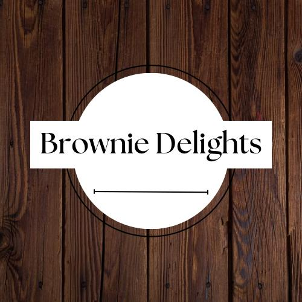

Brownie Delights
Este emprendimiento se dedica a la elaboración de brownies y el agregado de algunos tópicos como dulce de leche , chips de chocolate entre otros. El producto es muy bueno en cuanto a relación calidad-precio y otorga un gran sabor dulce para cualquier amante de lo dulce, incluyendo su packaging el cual consiste en una caja marrón con un envoltorio del logo y un hilo color negro para dar una buena vista del producto tanto por fuera como adentro.